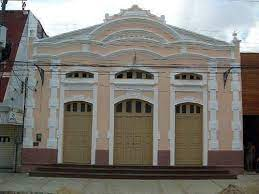
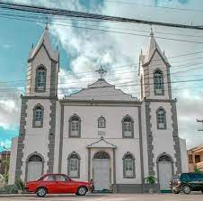
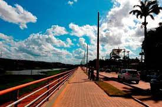

Conheça Alguns dos Serviços Públicos de Palmares
Cine Teatro Apollo
O Cine Teatro Apollo, em Palmares-PE, foi tombado por sua importância cultural. Foi inaugurado em 1914. É uma construção de estilo eclético.
O Cine-Teatro Apollo foi inaugurado em 1914, construído com o propósito de atender às atividades culturais, que na época eram desenvolvidas e ganhavam espaço na sociedade local, vindo a representar para a região um bem cultural que poucas cidades do interior possuíam. Em 1932, Miguel Jasseli fundou a Sociedade de Cultura de Palmares, formada por um grupo de teatro amador no qual se integrou Hermilo Borba Filho, então com 15 anos.
Catedral Nossa Senhora da Conceição.
igreja Matriz de Nossa Senhora da Conceição Em 1722 a capela-mor já se encontrava concluída e, em 1772, foi concedido auxílio real para dar procedimento às obras que foram concluídas no dia 06 de novembro de 1802,quando a igreja recebeu a benção inaugural.
A Matriz de Nossa Senhora da Conceição é um dos maiores patrimônios arquitetônicos da cidade. Sua construção norteou toda a ocupação em seu entorno e isso fez e faz com que ela seja a referênciada comunidade, além de abrigar a padroeira do município
Orla De Palmares-PE
A cidade de Palmares,na Mata Sul do Estado vai ganhar uma nova orla nas margens do Rio Una, em substituição a que foi destruída após as fortes chuvas que atingiram o município em 2010. Além da revitalização da orla,vão ser inauguradas nesta segunda-feira (9) duas pontes.
As obras foram executadas com recursos do Governo do Estado,que só na orla investiu R$ 2.378.730,18. A inauguração vai acontecer às 9h em frente ao Batalhão da Polícia Militar.